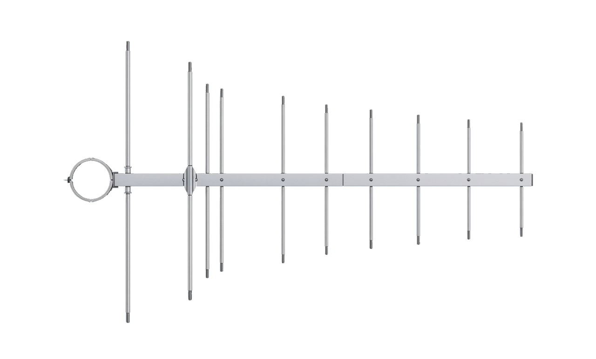
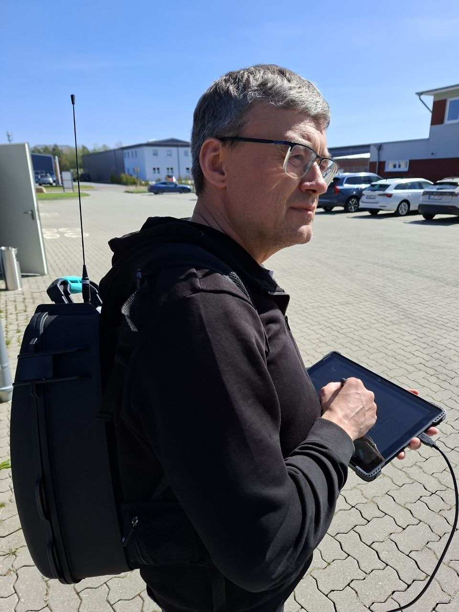

Funkfeldmessungen und technische Bewertung von BOS-Funklösungen in Gebäuden – normgerecht und mit professioneller Messtechnik.
Radio field measurements and technical assessment of BOS radio solutions in buildings – standards-compliant and with professional measurement technology.

Ihr Ansprechpartner für Funkfeldmessungen
Your contact for radio field measurements
Ihr Ansprechpartner für Funkfeldmessungen und technische Bewertung der Funkversorgung in Gebäuden.
Your contact for radio field measurements and technical assessment of radio coverage in buildings. Support for analysis, planning and implementation of radio solutions – especially for BOS applications in TETRA digital radio (380–400 MHz).
Unterstützung bei Analyse, Planung und Umsetzung von Funklösungen – insbesondere für BOS-Anwendungen im TETRA-Digitalfunk (380–400 MHz).
Measurements and evaluations are carried out in accordance with standards (e.g. DIN 14024) and provide a solid basis for planning and further project steps.
Messungen und Auswertungen erfolgen normgerecht (z. B. nach DIN 14024) und bilden eine belastbare Grundlage für Planung und weitere Projektschritte.
Measurements and evaluations are carried out in accordance with standards (e.g. DIN 14024) and provide a solid basis for planning and further project steps.
Fundiert durch über 27 Jahre praktische Erfahrung in der Funk- und Kommunikationstechnik.
Backed by over 27 years of practical experience in radio and communications engineering.

Durchführung von Funkfeldmessungen in Gebäuden, einschließlich Erforderlichkeitsmessung, Gebäudemessung und Abnahmemessung (TMO/DMO) als Grundlage für Planung und Nachrüstung.
Carrying out radio field measurements in buildings, including necessity measurement, building measurement and acceptance measurement (TMO/DMO) as a basis for planning and retrofitting.
Planung von Inhouse-Funklösungen für BOS-Anwendungen (TETRA) unter Berücksichtigung baulicher Gegebenheiten und technischer Anforderungen. Simulation und Auslegung der Funkversorgung mit spezialisierter Planungssoftware (z. B. iBwave) als Grundlage für eine zuverlässige und normgerechte Umsetzung.
Planning of in-house radio solutions for BOS applications (TETRA) taking into account structural conditions and technical requirements. Simulation and design of radio coverage with specialised planning software (e.g. iBwave) as the basis for reliable, standards-compliant implementation.
Bewertung bestehender Funk- und Antennensysteme als Grundlage für die Umstellung von analogen auf digitale BOS-Funklösungen (TETRA). Analyse und Entwicklung geeigneter technischer Lösungen unter Berücksichtigung der bestehenden Infrastruktur.
Assessment of existing radio and antenna systems as a basis for the transition from analogue to digital BOS radio solutions (TETRA). Analysis and development of suitable technical solutions taking the existing infrastructure into account.
Technische Unterstützung während des Projekts, einschließlich Durchführung von Messungen, Erstellung von Messberichten und Projektdokumentation. Mitwirkung bei Abstimmung mit Behörden und Berücksichtigung der Anforderungen von BDBOS.
Technical support during the project, including carrying out measurements, creating measurement reports and project documentation. Participation in coordination with authorities and consideration of BDBOS requirements.
Beispiele aus der praktischen Arbeit im Bereich BOS-Gebäudefunk und Funkfeldmessungen.
Examples from practical work in the field of BOS in-building radio and radio field measurements.
Funkfeldmessung zur Beurteilung der BOS-Versorgung, TMO-Messung im TETRA-Band 380–400 MHz.
Radio field measurement to assess BOS coverage, TMO measurement in the TETRA band 380–400 MHz.
iBwave-Planung für TETRA-Inhouse-Anlage, Auslegung der Antennenverteilung über 6 Stockwerke.
iBwave planning for TETRA in-house system, design of antenna distribution over 6 floors.
Abnahmemessung (TMO/DMO) nach DIN 14024 für neu errichtete BOS-Gebäudefunkanlage.
Acceptance measurement (TMO/DMO) to DIN 14024 for a newly erected BOS in-building radio system.
Ich unterstütze Auftraggeber, Planer und Behörden, die normgerechte Funkversorgung in Gebäuden benötigen.
I support clients, planners and authorities who need standards-compliant radio coverage in buildings.
Feuerwehr, Polizei, Rettungsdienste – alle, die gesetzliche Anforderungen zur BOS-Versorgung erfüllen müssen.
Fire brigades, police, rescue services – all who must meet legal requirements for BOS coverage.
Bei Neubauten und Modernisierungen, bei denen eine BOS-Gebäudefunkanlage nachzuweisen oder nachzurüsten ist.
For new constructions and modernisations where a BOS in-building radio system must be demonstrated or retrofitted.
Als externer Fachberater für Funkplanung und Messungen, wenn intern kein Spezialwissen vorhanden ist.
As an external specialist consultant for radio planning and measurements when in-house specialist knowledge is not available.
Technische Unterstützung bei Messung, Inbetriebnahme und Dokumentation von BOS-Gebäudefunkanlagen.
Technical support for measurement, commissioning and documentation of BOS in-building radio systems.
Für wiederkehrende Prüfmessungen und technische Bewertung bestehender Anlagen im laufenden Betrieb.
For recurring test measurements and technical assessment of existing systems in ongoing operation.
AVTEL Systems – Funkfeldmessung & BOS-GebäudefunkRadio field measurement & BOS in-building radio
Als Diplom-Ingenieur für Nachrichtentechnik mit mehr als 27 Jahren Berufserfahrung biete ich spezialisierte Dienstleistungen im Bereich Funkfeldmessungen und BOS-Gebäudefunkplanung an.
As a graduate engineer in communications engineering with more than 27 years of professional experience, I offer specialised services in the field of radio field measurements and BOS in-building radio planning.
Mein Schwerpunkt liegt auf dem TETRA-Digitalfunk (380–400 MHz) für Behörden und Organisationen mit Sicherheitsaufgaben (BOS). Ich führe normgerechte Messungen nach DIN 14024 durch und erstelle praxisorientierte Berichte, die als solide Grundlage für Planung und Genehmigungsverfahren dienen.
My focus is on TETRA digital radio (380–400 MHz) for authorities and organisations with security tasks (BOS). I carry out standards-compliant measurements to DIN 14024 and prepare practice-oriented reports that serve as a solid basis for planning and approval procedures.
Als unabhängiger Spezialist biete ich schnelle Verfügbarkeit und kurzfristige Vor-Ort-Termine in Bayern.
As an independent specialist, I offer fast availability and short-notice on-site appointments in Bavaria.
Fundiertes Fachwissen, das durch Studium, Weiterbildungen und jahrzehntelange Praxis erworben wurde.
Sound specialist knowledge acquired through study, further training and decades of practical experience.
Abschluss als Diplom-Ingenieur der Nachrichtentechnik – fundierte akademische Grundlage in der Hochfrequenz- und Kommunikationstechnik.
Degree as a graduate engineer in communications engineering – solid academic foundation in radio frequency and communications technology.
Zertifizierte Schulung für Planung und Messung von Gebäudefunkanlagen nach der Norm DIN 14024 (BOS-Gebäudefunk).
Certified training for planning and measurement of in-building radio systems to the DIN 14024 standard (BOS in-building radio).
Über zwei Jahrzehnte praktische Erfahrung in der Funk- und Kommunikationstechnik, davon langjährige Spezialisierung auf BOS-Funksysteme.
More than two decades of practical experience in radio and communications technology, including many years of specialisation in BOS radio systems.
Spezialkenntnisse im TETRA-Standard für BOS-Funkkommunikation, einschließlich TMO- und DMO-Betriebsmodi.
Specialist knowledge in the TETRA standard for BOS radio communication, including TMO and DMO operating modes.
Einsatz spezialisierter Planungssoftware (iBwave) für Simulation und Auslegung von Inhouse-Funklösungen.
Use of specialised planning software (iBwave) for simulation and design of in-house radio solutions.
Einsatz kalibrierter Messtechnik für normgerechte Funkfeldmessungen und reproduzierbare, dokumentierbare Ergebnisse.
Use of calibrated measurement technology for standards-compliant radio field measurements and reproducible, documentable results.
Haben Sie Fragen oder benötigen Sie Unterstützung bei Ihrem Projekt? Senden Sie eine Anfrage – ich melde mich kurzfristig bei Ihnen zurück.
⚡ Rückmeldung in der Regel innerhalb von 24 Stunden · Schnelle Verfügbarkeit für Vor-Ort-Termine in Bayern
Do you have questions or need support for your project? Send an enquiry – I will get back to you promptly.
⚡ Response usually within 24 hours · Fast availability for on-site appointments in Bavaria
Mit dem Absenden stimmen Sie der Verarbeitung Ihrer Daten gemäß unserer Datenschutzerklärung zu.
By submitting you agree to the processing of your data in accordance with our privacy policy.
Vielen Dank! Ich melde mich in der Regel innerhalb von 24 Stunden.
Thank you! I usually respond within 24 hours.